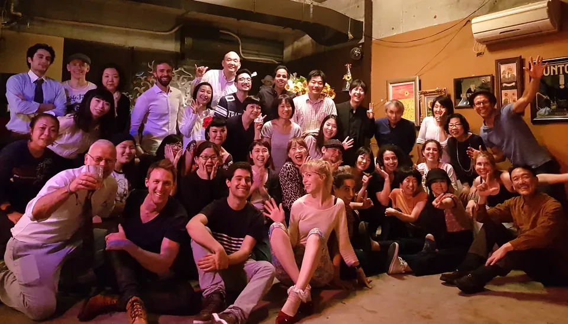

Welcome
What’s on?Swing Dance Kobe is all about spreading the fun of Swing Dancing, in the Kobe area here in Japan. We act in the spirit of Frankie Manning to make this dance available to as many people as possible. Why, because it brings so much fun in your life! Be part of our community.
We organise social events, participate in festivals and also provide dance lessons. We all help each other out. We embrace the craziness of swing. We encourage people to be different. Dancing makes us happy, this is scientifically proven

What is Lindy Hop
Lindy Hop is a joyful partner swing dance born in Harlem’s Black communities in the late 1920s and made popular during the swing era. Danced to swinging jazz, it combines rhythmic footwork, playful improvisation and a connection between partners. You don’t need the spectacular acrobatics seen in old films — just a few basic steps, a little curiosity and a love of music to start enjoying the dance.